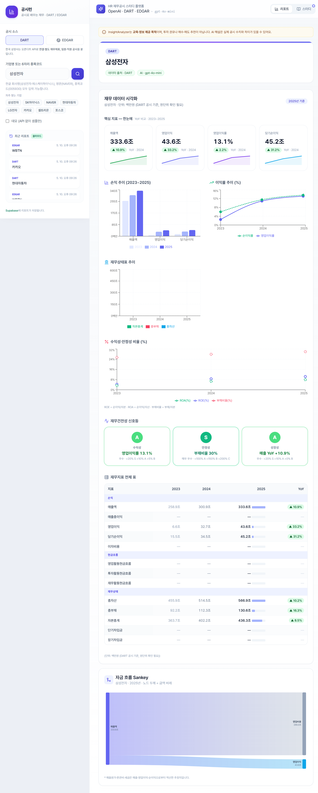
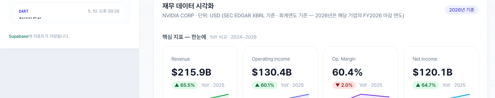
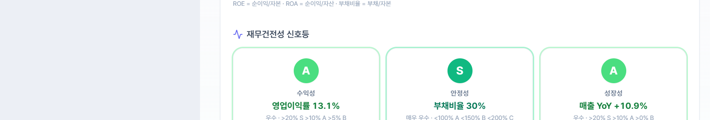
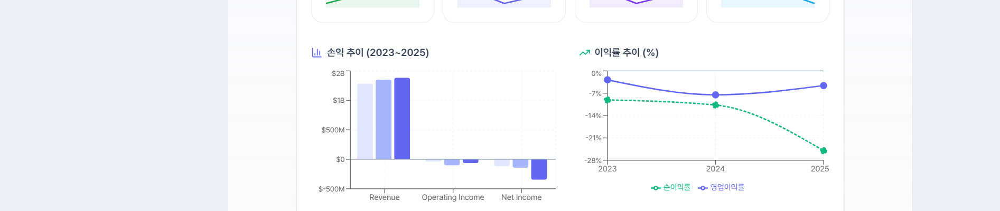
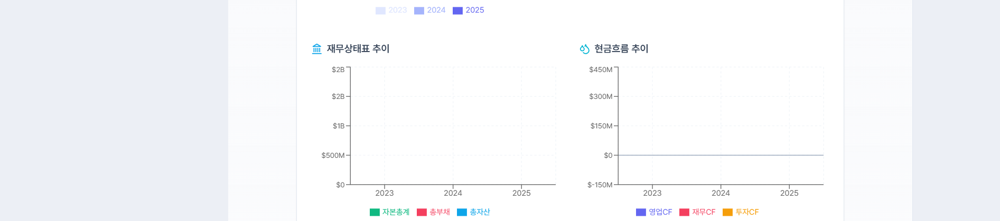
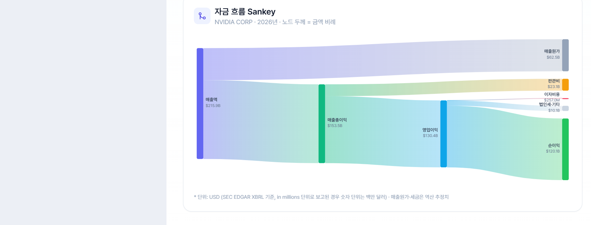
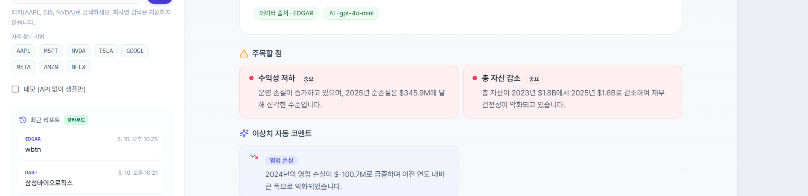
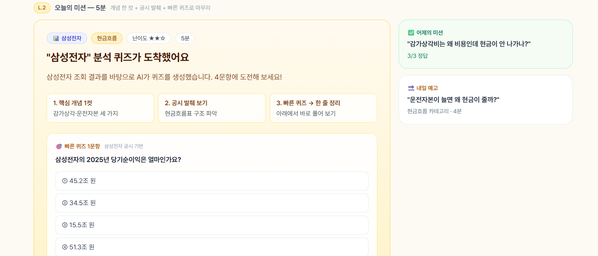
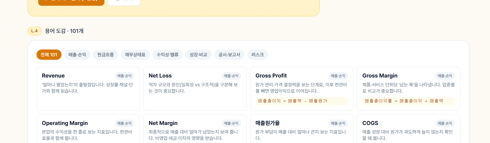

국내외 기업 공시를 AI가 자동 수집·분석해
재무 리포트로 정리해주는 도구입니다.
금감원 DART(국내)와 SEC EDGAR(미국) API에서 재무 공시를 실시간으로 가져옵니다.
OpenAI GPT가 핵심 수치를 요약하고 재무 위험·강점·거시 시나리오를 자동으로 분석합니다.
3년치 매출·이익·부채 추이, 이익률, 자금 흐름 Sankey를 인터랙티브 차트로 제공합니다.
실제 공시 데이터로 출제되는 퀴즈와 101개 재무 용어 도감을 함께 제공합니다.
삼성전자NAVER005930AAPL, NVDA왼쪽 사이드바 상단에서 DART(국내) 또는 EDGAR(미국)를 선택합니다.
검색창에 기업명 또는 종목코드를 입력합니다. 퀵픽 버튼으로 자주 찾는 기업을 바로 조회할 수 있습니다.
돋보기 버튼 또는 Enter 키. AI 분석 포함 보통 10–20초 소요됩니다.

▸ 핵심 지표 카드

| 구성 요소 | 내용 | 출처 |
|---|---|---|
| 핵심 지표 카드 | 매출액 · 영업이익 · 영업이익률 · 당기순이익 (YoY 포함) | 공시 API |
| 순익 추이 | 최근 3년 매출 / 영업이익 / 당기순이익 막대 차트 | 공시 API |
| 이익률 추이 | 영업이익률 · 순이익률 꺾은선 차트 | 공시 API |
| 재무상태표 추이 | 총자산 · 총부채 · 자기자본 3년 추이 | 공시 API |
| 현금흐름 추이 | 영업 · 투자 · 재무 현금흐름 비교 (EDGAR) | 공시 API |
| 재무건전성 신호등 | 영업이익률 / 부채비율 / 매출 YoY를 A–C 등급으로 요약 | AI 계산 |
| 재무지표 전체 표 | 손익·재무상태·현금흐름 전 항목을 연도별로 정리 | 공시 API |
| 자금 흐름 Sankey | 매출 → 비용 → 이익 흐름 리본 다이어그램 | 공시 API |
| 주목할 점 | 재무 강점 · 위험 · 이상 지표 · 거시 시나리오 (AI) | AI 분석 |
▸ 재무건전성 신호등

매출액·영업이익·당기순이익을 3년 비교합니다. 막대가 우상향이면 성장 중인 기업입니다.
영업이익률 지속 하락은 비용 구조 악화 신호입니다. 순이익률과 괴리가 크면 이자비용·세금을 확인하세요.
총자산 대비 부채 비율 변화를 확인합니다. 부채가 자산보다 빠르게 늘면 레버리지 위험 신호입니다.
영업·투자·재무 현금흐름을 비교합니다. 영업CF가 흑자면 자생 가능한 사업 구조입니다.
▸ 순익 추이 / 이익률 추이 차트 (WBTN — 상장 초기 적자 기업 예시)

▸ 현금흐름 추이 차트 (EDGAR 전용)

Sankey 다이어그램은 매출이 어떤 비용으로 빠져나가고 이익이 얼마나 남는지를 리본의 두께로 직관적으로 보여줍니다.

매출액 — 모든 자금의 출발점입니다.
매출원가·판관비·이자비용·세금이 리본으로 분기됩니다.
영업이익·순이익 — 두꺼울수록 수익성이 높습니다.

| 카드 종류 | 설명 |
|---|---|
| 💪 재무 강점 | 공시 수치로 확인되는 경쟁우위 (높은 영업이익률, 무차입 경영 등) |
| ⚠️ 주의할 점 | 순수 재무 위험 요소 — 레버리지 · 현금흐름 · 수익성 위험 |
| 🔍 이상 지표 | 전년 대비 급변한 지표와 방향성 (↑↓) |
| 🌐 거시 시나리오 | 환율·금리·원자재 등 외부 변수가 실적에 미치는 영향 |
우측 상단 스터디 버튼을 누르면 학습 모드로 전환됩니다.
▸ 오늘의 퀴즈

▸ 재무 용어 도감 (101개)

공시 확인 → 탐험 → 베팅 → 인사이트 확인, 4단계로 진행됩니다.
101개 재무 용어를 카드 형태로 학습합니다. 카테고리별 필터를 지원합니다.
실제 공시를 주제별로 분석하는 가이드 카드를 제공합니다.
이전 학습 내용을 다시 볼 수 있는 아카이브입니다. 브라우저 로컬에 자동 저장됩니다.
사이드바 하단 목록에서 이전 검색 결과를 클릭하면 즉시 재확인할 수 있습니다. 6시간 캐시 이내에는 API를 재호출하지 않습니다.
기본은 브라우저 로컬 스토리지에 저장됩니다. VITE_SUPABASE_* 설정 시 Supabase 클라우드로 동기화해 여러 기기에서 공유할 수 있습니다.
Ctrl+P를 누르면 사이드바를 숨기고 리포트만 인쇄 최적화 레이아웃으로 출력됩니다.